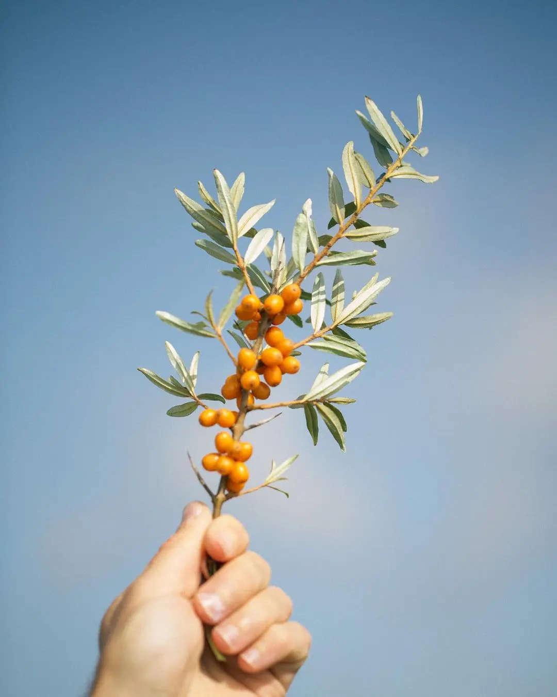
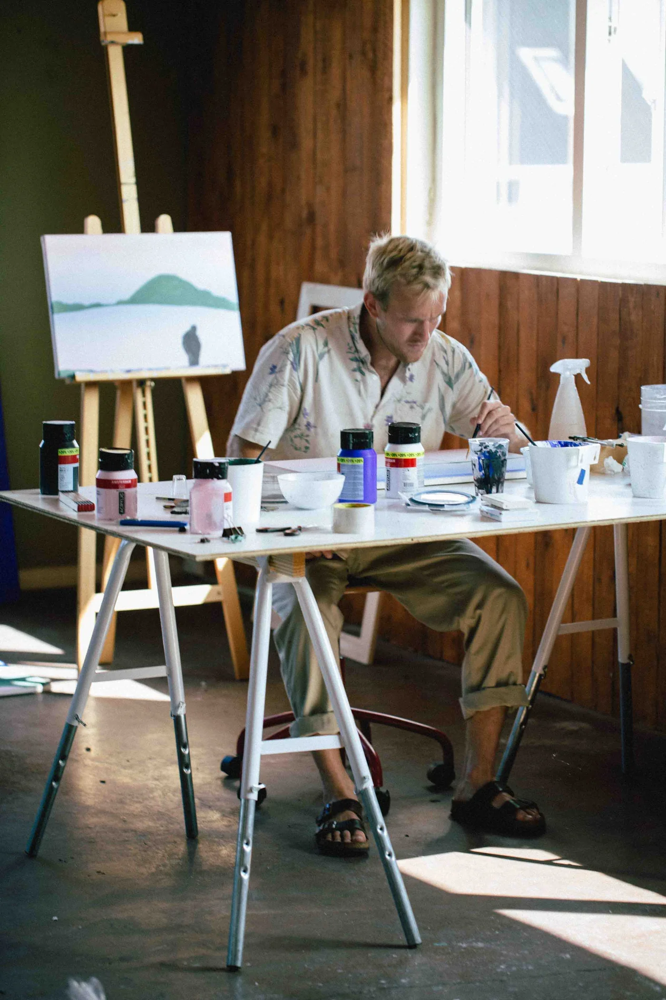
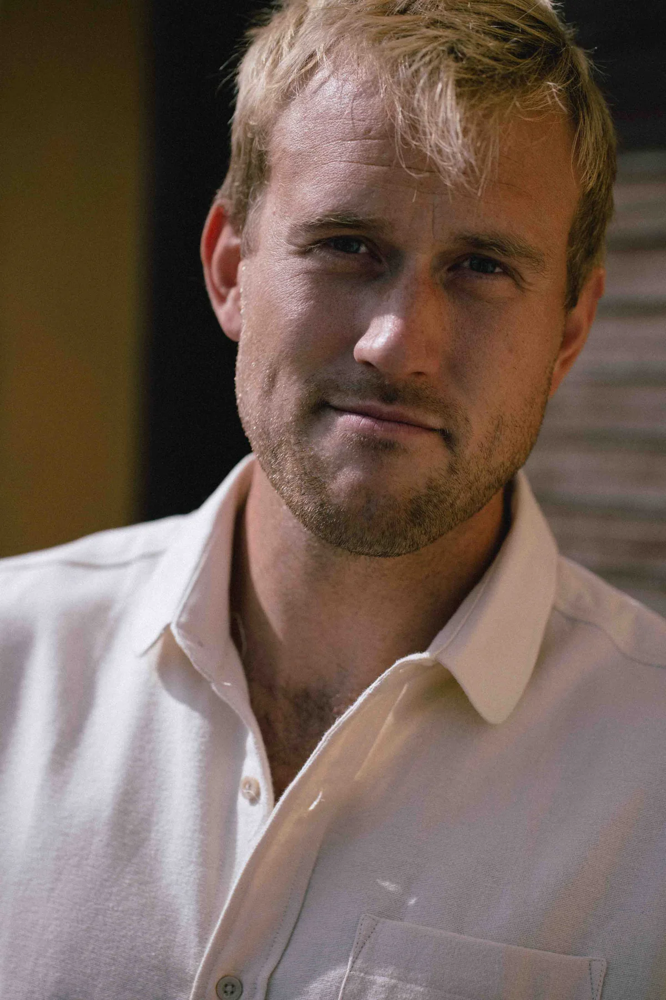
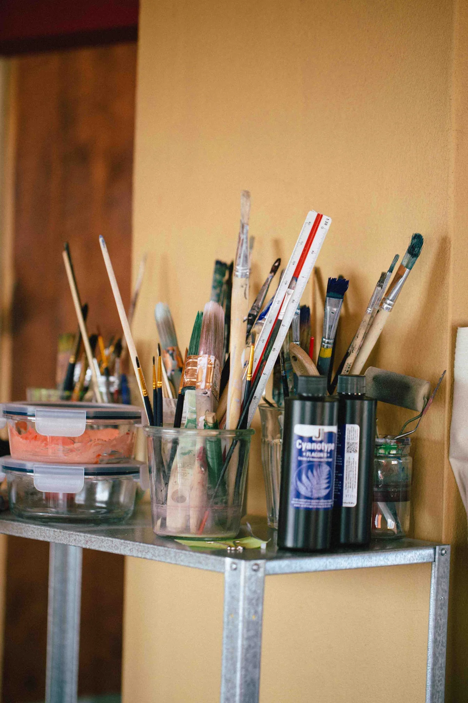
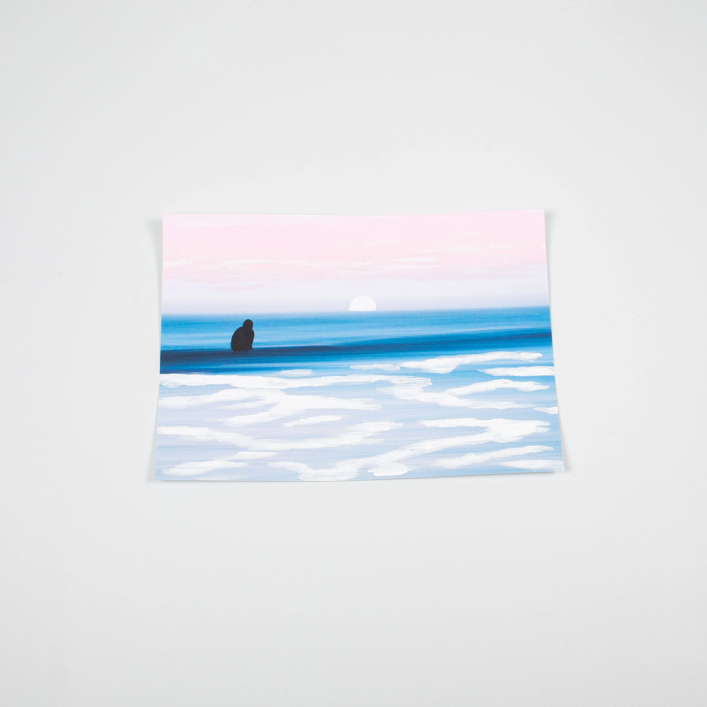
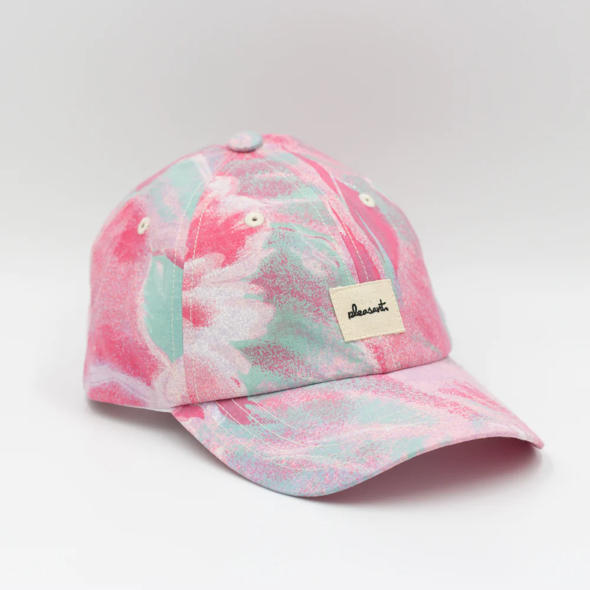

Pleasant Stories
A Pleasant time with Anton
Af Rasmus Boesen3. okt. 2023
We are Pleasant, and we want to cultivate change. A structural change that respects nature and pleases
people, and a cultural change that inspires us to live better and happier. With this in mind, we want to
meet different people and have a pleasant time with them. Follow our stories searching for inspiration
and views from other people’s personal and professional lives. Let’s change the world with style.
In this episode, we met up with Anton from @antons_atelier, who is currently our office mate.

“In my projects, nature and climate are some of my primary sources of inspiration
and motivation.”



Hej Anton! Fortæl lidt om dig selv og hvad du laver?
Jeg er Anton, 30 år, og bor i Klitmøller. Jeg har boet i Thy de sidste 3 år og flyttede
hertil fra Aalborg,
hvor jeg læste Industrielt Design. Jeg er oprindeligt fra Malling, syd for Aarhus. Jeg blev draget af
bølgerne, naturen og den iværksætterånd, der er her sammen med det unikke lokale fællesskab. Til daglig
sidder jeg på kontor med jer, og pt arbejder jeg freelance som LCA-konsulent og grafiker og illustrator.
Antons Atelier er mit lille sideprojekt, hvor jeg maler og tegner.
Det lyder spændende! Hvad er Antons Atelier for noget?
Antons Atelier har til formål at give plads til ren kreativ udfoldelse uden for mange tanker
og planer. Det
er godt, hvis man er typen, der er meget oppe i sit eget hoved, at få nogle farver ned på lærred eller
papir
og bruge kroppen lidt intuitivt. Det er et forsøg på at komme lidt ud af hovedet og ned i kroppen, at
tvinge
sig selv til at arbejde intuitivt uden for meget kontrol og planlægning. Det er en sund øvelse for en
som
mig, der er meget oppe i hovedet og lægger planer om at lave planer.
Det er også et slags outlet for de frustrationer om klimakrisen, jeg kan have, og måske også mit eget
indre
klima. Alle de udfordringer, verden har med klimaet, kan godt gøre en deprimeret, men hvis man udtrykker
det
og sætter fokus på det, kan det hjælpe ens sind, tror jeg.
Jeg har altid drømt om at have et atelier eller værksted dedikeret til kreative projekter. Mit hoved har
altid boblet over af idéer til nye projekter, så det er forløsende at få nogle af disse ideer ud i
livet, så
man ikke føler, de går til spilde.
Tænker du aktivt på natur og klima?
Både igennem dine projekter, men også privat?
Bestemt. I mine projekter vil jeg sige, at de er nogle af de væsentligste drivkræfter og
inspirationskilder, jeg har. Jeg har altid været fascineret af naturen, lige fra at fange sommerfugle i
folkeskolen til at studere stjernehimlen i min stjernekikkert. Fra den lille skala til den helt store.
Fra det abstrakte i det uendelige univers til farvesammensætninger og mønstre i naturen, åbner jo op for
en uendelig kreativ energi.
Klimakrisen er noget, som konstant er i ens bevidsthed, og især nu efter et år med mange
naturkatastrofer. Jeg vil gerne have, at mine værker skal sætte fokus på det og få folk til at
reflektere over det, men også sætte fokus på det smukke ved den vilde natur. At gøre folk bevidste om,
at naturen er værd at passe på. Det er noget, man lægger mere mærke til her i Thy. Den rå natur. Man er
ligesom mere en del af den, når man nærmest bor i den. Det vil jeg gerne vise omverdenen. Det er vel
også en form for stille klimaaktivisme at tage det med i den kunstneriske proces. Det kan være med til
at lindre lidt af den magtesløse følelse, man kan have.
I det private har jeg fornyelig skåret svinekød ud af min kost. Både pga. klima og biodiversitetshensyn,
men også fordi det er en dårlig industri og et dårligt produkt. Danskere er vokset op med svinekød i
kosten, så vi er vant til at spise pølser, leverpostej og flæskesteg. Men er det egentlig så lækkert, at
vi vil bruge så meget af Danmarks arealer til at dyrke foder til svin, som indirekte giver iltsvind i de
indre farvande og presser vores natur og insekter helt i bund? Nej vel?
Tænker du over, hvad du køber og smider ud, og hvor meget?
Ja, men måske ikke så meget, som jeg burde. Jeg køber sjældent nyt tøj og for det meste
Pleasant ; Men jeg kører stadig meget i bil, bruger digitale teknologier, og jeg elsker grej. Men når
jeg køber nye produkter, kigger jeg efter de grønneste muligheder. Jeg er kæmpe tilhænger af, at vi som
forbrugere skal have muligheden for at vælge de mest hensynsfulde produkter, vi nu en gang har brug for.
Det grønne valg burde være det eneste valg.
Hvordan ser din work/life balance ud?
Min work/life balance er sådan, at jeg selv planlægger min dagligdag efter de opgaver, jeg
har, og i samarbejde med dem, jeg arbejder med. Det er nyt for mig, men jeg kan mærke, at det passer mig
perfekt. Især når du bor her i Thy og gerne vil surfe, når der er gode bølger, er det guld værd at kunne
prioritere det. For mig er det nøglen til det gode Thy liv.
I forhold til klimakrisen, hvad er efter din opfattelse så det vigtigste, der skal ændres
for at hjælpe klimaet på rette vej?
Helt klart den kollektive forståelse af, hvor travlt vi har. Politikere og borgere burde
have samme krisementalitet som under corona. Den virker jo bedst, hvis alle er med på den. Jeg synes, at
vi i Danmark burde gå forrest med alt, hvad der findes af grøn teknologi, klimaafgifter,
naturgenoprettelse og forbud mod at sprøjte og bundtrawle og hvad ved jeg. Og vi kan ikke vente på, at
80% er enige. Vi skal i gang.
Tænker du over dit tøjforbrug, hvor tøjet kommer fra, og hvordan det er produceret?
Ja, hvis jeg køber nyt tøj, så gerne så lokalt produceret eller sourcet som muligt. Jeg
køber dog sjældent tøj, for jeg går ikke så meget op i det. Jeg går meget i det samme. Så hvis det er
tidsløst og i god kvalitet, er jeg ofte tilfreds.
Hvordan tror du verden ser ud om 10 år?
Jeg tror verden bliver et mere råt sted med klimaflygtninge og flere naturkatastrofer, men forhåbentlig
er vi kommet op i fart, og at der spirer et håb om en smuk og mangfoldig fremtid med et sundere miljø
for både mennesker og natur.


We've teamed up with @antons_atelier to bring you a pleasant giveaway – a chance to win
one of these original photo paintings 🫶The paintings are reflections of the difficult times we face as
humans on a distressed planet. Influenced by actions of others and our past selves. How we need to
change our view on a world we once knew. Familiar places change at a rapid speed and nothing is what it
used to be. How does this affect us?